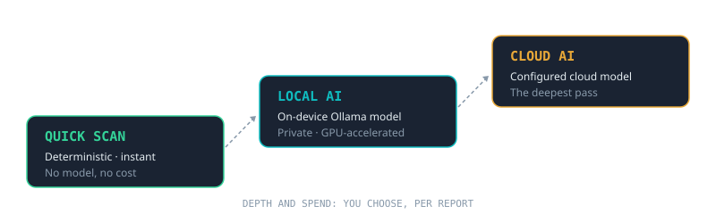
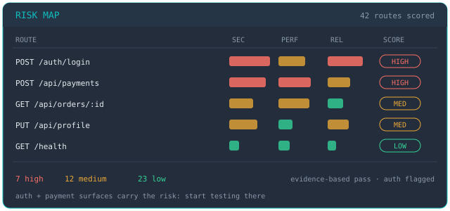
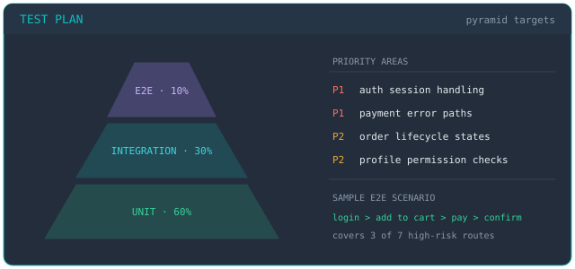
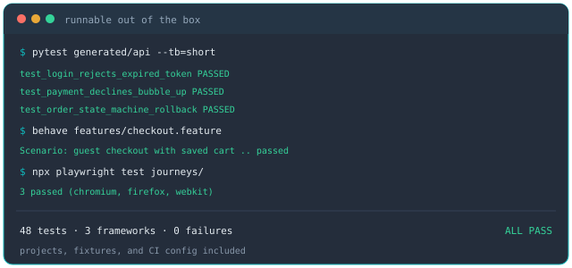
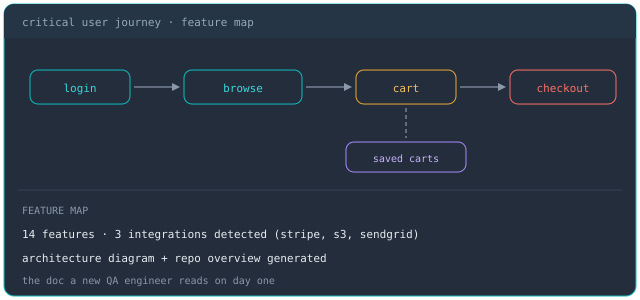
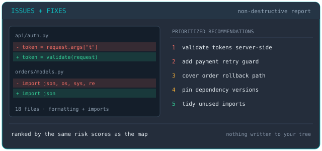
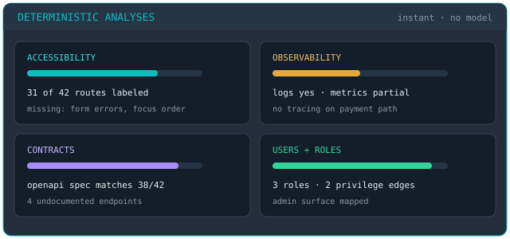

One scan in, a QA toolkit out

Flagship project
The AI QA copilot you point at a repository.
Starting QA on an unfamiliar codebase means days of spelunking before you can write a single meaningful test. Aegis compresses that to one scan. It maps the app's surface area (routes, endpoints, auth), scores every route for risk, and generates the artifacts a QA engineer needs on day one. All from one scan console and one dashboard, running on your machine.

Every report runs at any tier. Start free and instant; go deeper only where it's worth it.

Every route scored for security, performance, and reliability. A quick rule-based pass, or a deeper evidence-based one.

A prioritized strategy: test-pyramid targets, priority areas, and sample end-to-end scenarios.

Runnable Behave, pytest, and Playwright projects. Working test suites, not snippets.

Feature maps, integration detection, critical-user-journey discovery, architecture diagrams, and a repo overview.

A non-destructive issue report plus prioritized testing and fix recommendations.

Cross-cutting coverage (accessibility, observability, contracts, compliance), users & roles, pipeline & gates, and test data & environments.
Aegis never houses your repositories. Scans run on your hardware, and the Local AI tier uses an on-device model, so consulting engagements, client code, and pre-release work stay exactly where they are. Cloud models are opt-in, per report, and you always know which tier ran.
Multi-user Aegis is in active development. A security-first account hub is built and under test, with invite-only access on the way, so teams can share scan results and published artifacts without ever sharing source code. Ahead of that: task-aware model routing (Aegis picks the right model per report) and a full audit trail of every AI decision.
Aegis works the prevention side: find the risks before they ship. Bugalizer works the intake side, an AI pipeline that takes incoming bug reports and validates, triages, localizes the code, and proposes fixes automatically. Together they cover the quality loop in both directions.
I'm demoing Aegis to QA folks now. If you'd like to see it run against a real repo, or talk about the problems it solves, send a note.